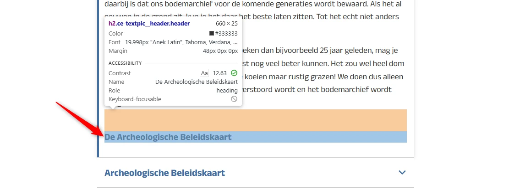
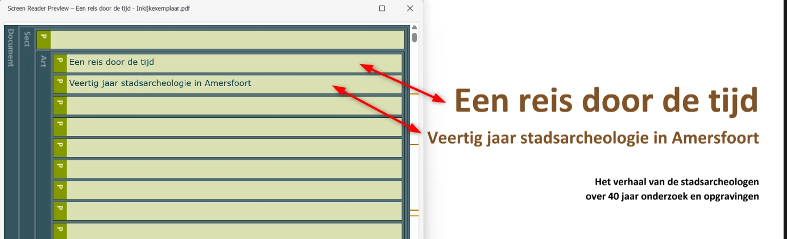
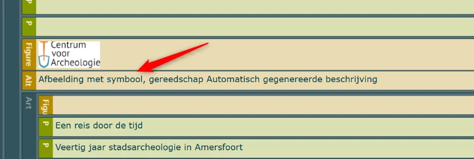
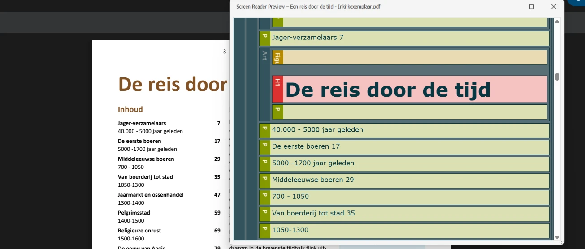
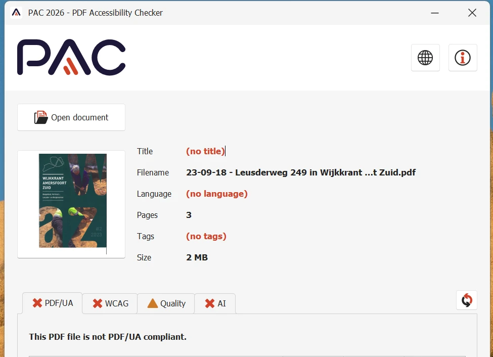

Link naar pagina: https://www.archeologischcentrum.nl/
Geen bevindingen.
Wij hebben de content van de website www.archeologischcentrum.nl onderzocht tussen 7 en 9 juli 2026. Op dit moment is een deel van de succescriteria als voldoende beoordeeld. In dit rapport lees je welke punten nog verbetering behoeven en hoe deze kunnen worden aangepakt.
In opdracht van
Buiten scope:
Exporteer alle bevindingen als CSV-bestand. Je kunt het in een (online) spreadsheet inladen om met je team samen te werken.
Exporteer alle bevindingen als Jira-compatibel CSV-bestand. Je kunt het direct importeren via Jira > Issues > Import issues from CSV.
Houd per bevinding bij of het is opgelost. Je voortgang wordt opgeslagen in jouw browser. Niemand anders kan je resultaat zien.
Geen bevindingen gevonden voor dit filter.
Link naar pagina: https://www.archeologischcentrum.nl/
Geen bevindingen.
Link naar pagina: https://www.archeologischcentrum.nl/contact-en-openingstijden
Geen bevindingen.
Link naar pagina: https://www.archeologischcentrum.nl/winkeltje
Geen bevindingen.
Link naar pagina: https://www.archeologischcentrum.nl/over-deze-website
Geen bevindingen.
Link naar pagina: https://www.archeologischcentrum.nl/toegankelijkheid
Geen bevindingen.
Link naar pagina: https://www.archeologischcentrum.nl/opgravingen
Geen bevindingen.
Link naar pagina: https://www.archeologischcentrum.nl/we-laten-het-zien
Geen bevindingen.
Link naar pagina: https://www.archeologischcentrum.nl/winkeltje/een-reis-door-de-tijd
Geen bevindingen.
Link naar pagina: https://www.archeologischcentrum.nl/opgravingen/opgravingen-op-de-kaart
Geen bevindingen.
Link naar pagina: https://www.archeologischcentrum.nl/opgravingen/over-opgraven-en-uitwerken

De tekst "De Archeologische Beleidskaart" in de eerste accordeon "De wet" is geen kop, maar is toch gemarkeerd met een h2. De tekst lijkt per ongeluk toegevoegd: hij dupliceert de kop van het volgende element en er staat geen content onder.
Ik lees de website met een schermlezer. Wanneer ik door de koppen navigeer, kom ik een kop tegen die geen echte content aankondigt. Ik verwacht dat elke kop het begin van een nieuwe sectie markeert.
"De Archeologische Beleidskaart" is geen kop: er hoort geen content bij. Verwijder de overbodige tekst of voeg er relevante content onder toe.
Link naar pagina: https://www.archeologischcentrum.nl/pagina-nog-niet-opgegraven
Geen bevindingen.
Link naar pagina: https://www.archeologischcentrum.nl/zelf-iets-doen-met-archeologie/zelf-iets-gevonden
Geen bevindingen.
Link naar pagina: https://www.archeologischcentrum.nl/vondsten-met-een-verhaal/leusderweg-249
Geen bevindingen.
Link naar pagina: https://www.archeologischcentrum.nl/winkeltje/een-reis-door-de-tijd
Dit PDF-document heeft geen titel ingesteld in de bestandseigenschappen. Een PDF-document hoort een titel te hebben die het doel of de inhoud duidelijk beschrijft. Die titel hoort ook in de titelbalk te staan, in plaats van de bestandsnaam. Zo herkennen bezoekers, met of zonder beperking, snel of het document relevant voor ze is.
Ik lees de PDF met een schermlezer. Wanneer ik een PDF open, hoor ik alleen een nietszeggende bestandsnaam zoals 'document123.pdf'. Ik verwacht dat de schermlezer een duidelijke documenttitel aankondigt, zodat ik weet wat ik open.
Open de PDF in Adobe Acrobat Pro en controleer Bestand > Eigenschappen > Beschrijving: het veld Titel moet het onderwerp van het document beschrijven, niet de bestandsnaam of "Microsoft Word - finaldraft.docx". Controleer daarna onder Beginweergave > Tonen dat "Documenttitel" is gekozen, zodat de titel en niet de bestandsnaam in het venster of tabblad verschijnt. Bevestig met NVDA of VoiceOver dat de titel wordt aangekondigd bij het openen van de PDF. Draai PAC voor een automatische controle.
Voeg een beschrijvende titel toe aan de bestandseigenschappen van de PDF. In Adobe Acrobat: ga naar Bestand > Eigenschappen > tabblad Beschrijving, vul een beschrijvende titel in en zorg dat de titel in de titelbalk wordt getoond in plaats van de bestandsnaam.

In dit PDF-document zijn meerdere koppen niet als kop gemarkeerd. Zie bijvoorbeeld "Een reis door de tijd" en "Veertig jaar stadsarcheologie in Amersfoort".
Hierdoor wijkt de visuele informatiestructuur af van de documentstructuur in de tags.
Ik lees de PDF met een schermlezer. Wanneer ik door de pagina navigeer via koppen, mis ik visuele koppen omdat mijn schermlezer ze niet als kop herkent. Ik verwacht dat elke visuele kop ook door mijn schermlezer als kop wordt aangekondigd.
Open de PDF in Adobe Acrobat Pro en bekijk de tag-structuur via Weergave > Tonen/verbergen > Navigatievensters > Codes. Visuele koppen, lijsten, tabellen en formuliervelden moeten als echte tags bestaan: <H1> tot en met <H6>, <L>, <Table> met <TH>, <TR> en <TD>, en <Form>. Draai de ingebouwde toegankelijkheidscontrole en PAC voor een automatische scan, en controleer daarna met een schermlezer of de structuur klopt wanneer je het document lineair leest.
Vervang de P-tag door de H1- tot en met H6-tag, zodat de documentstructuur in de tags gelijk is aan wat visueel in het document staat.
In dit PDF-document worden kop-tags misbruikt om gewone tekst visueel groter te maken. Zie de teksten die beginnen met "Voor de stadsarcheologen begint de…" en "Ongeveer 15.000 jaar geleden…" op pagina 7, de tekst "Vuursteen is een soort steen die vaak…" en vergelijkbare teksten elders in het document.
Dit verschil tussen de visuele presentatie en de onderliggende documentstructuur in de tags zorgt voor verwarring.
Als bezoeker die een schermlezer gebruikt, wil ik dat kop-tags alleen voor echte koppen worden gebruikt, zodat ik de structuur van het document kan begrijpen.
Navigeer met een schermlezer of een PDF-toegankelijkheidschecker door de koppen van het document. Controleer dat alleen echte koppen als kop zijn getagd en dat visueel vergrote tekst niet in de koppenstructuur zit.
Vervang de H-tags door P-tags, zodat de documentstructuur in de tags gelijk is aan wat visueel in het document staat.

Veel afbeeldingen in dit PDF-document, ook informatieve, zijn toegevoegd via een Figure-tag en hebben een automatisch gegenereerde beschrijving. Zie het logo "Centrum voor Archeologie" op pagina 2, de logo's "Stichting Archeologie Amersfoort STAA" en "Fonds voor Cultuurparticipatie" op pagina 3 en andere afbeeldingen door het hele document met dezelfde beschrijving: "Afbeelding met symbool, gereedschap Automatisch gegenereerde beschrijving".
Andere afbeeldingen zijn toegevoegd via een Figure-tag maar hebben helemaal geen beschrijving. Zie de afbeeldingen op pagina 1, 6, 9, 11 en andere.
Ik lees de PDF met een schermlezer. Wanneer ik een informatieve afbeelding tegenkom, hoor ik een vage of onjuiste beschrijving, of helemaal geen beschrijving. Ik verwacht dat elke afbeelding een duidelijke beschrijving heeft die vertelt wat erop staat.
Open de PDF in Adobe Acrobat Pro en bekijk de tag-structuur via Weergave > Tonen/verbergen > Navigatievensters > Codes. Elke informatieve afbeelding moet een <Figure>-tag zijn met een betekenisvol Alt-attribuut; decoratieve afbeeldingen markeer je als artefact, zodat hulpsoftware ze overslaat. Draai PAC voor een automatische controle en lees het document daarna met NVDA of VoiceOver om te bevestigen dat er geen bestandsnamen of ruis worden voorgelezen.
Loop alle afbeeldingen in het document na en bepaal of ze informatief of decoratief zijn. Informatieve afbeeldingen, waaronder logo's, grafieken en kaarten, krijgen een Figure-tag met een betekenisvolle alternatieve tekst. Decoratieve afbeeldingen markeer je als artefact, zodat hulpsoftware ze negeert.
Dit PDF-document bevat een inhoudsopgave op pagina 3. De Reference-tags worden daarin echter niet gebruikt.
Schermlezers vertrouwen op deze tags om de documentstructuur juist te interpreteren. Een inhoudsopgave hoort de volgende tags te bevatten: TOC, TOCI, Reference en Link.
Ik lees de PDF met een schermlezer. Wanneer ik de inhoudsopgave van een PDF gebruik om te navigeren, herkent mijn schermlezer de items niet. Ik verwacht dat ik vanuit de inhoudsopgave direct naar de juiste sectie in het document kan springen.
Navigeer met een PDF-toegankelijkheidschecker of een schermlezer naar de inhoudsopgave. Controleer dat die correct is getagd met de juiste structuur, inclusief de tags TOC, TOCI, Reference en Link, en dat elk item herkenbaar en activeerbaar is.
Voeg de juiste tags toe voor de onderdelen van de inhoudsopgave.

In dit PDF-document is de leesvolgorde niet logisch. Zie bijvoorbeeld pagina 4, waar de content van "Inhood", "Intro" en "Tussendoortjes" door elkaar loopt. Op pagina 5 en 6 komen koppen in de tags pas na de alinea's of koppen die eronder horen. Ook op andere pagina's wijkt de tag-volgorde af van de visuele volgorde.
Een schermlezer leest een PDF-document in de volgorde van de tags in de codelaag. Staan die tags niet in een logische volgorde, dan wordt de leesvolgorde onlogisch en is het voor een blinde bezoeker moeilijk om de inhoud van het document te begrijpen.
Als bezoeker die een schermlezer gebruikt, wil ik dat de content van een PDF-document in een logische leesvolgorde wordt aangeboden, zodat ik de informatie in dezelfde volgorde krijg als ziende bezoekers.
Open de PDF in een PDF-lezer of toegankelijkheidstool en bekijk de tag-structuur en de leesvolgorde. Controleer dat de volgorde van de tags overeenkomt met de visuele leesvolgorde van de content op de pagina, en dat het document van begin tot eind logisch te lezen is zonder dat informatie buiten de juiste volgorde verschijnt.
Zet de PDF-tags in dezelfde logische volgorde als de visuele presentatie van de content. Bezoekers die hulpsoftware gebruiken horen koppen, alinea's, lijsten, tabellen en afbeeldingen dan in de volgorde waarin ze bedoeld zijn.
Link naar pagina: https://www.archeologischcentrum.nl/vondsten-met-een-verhaal/leusderweg-249
Ook dit PDF-document heeft geen titel ingesteld in de bestandseigenschappen. Daardoor wordt de bestandsnaam getoond en is het voor bezoekers lastiger om het document te herkennen.
Ik lees de PDF met een schermlezer. Wanneer ik een PDF open, hoor ik alleen een nietszeggende bestandsnaam zoals 'document123.pdf'. Ik verwacht dat de schermlezer een duidelijke documenttitel aankondigt, zodat ik weet wat ik open.
Zie de vorige sectie voor de precieze stappen.
Geef elk PDF-document een betekenisvolle titel die het doel of de inhoud beschrijft, en zorg dat die titel in de titelbalk wordt getoond in plaats van de bestandsnaam.
In de metadata van deze PDF is de taal niet ingesteld. De taal moet ingesteld zijn, zodat schermlezers de informatie uit het bestand in de juiste taal aan de bezoeker doorgeven. Dit kan via de bestandseigenschappen.
Als bezoeker lees ik PDF's met een schermlezer. Ik wil dat elke PDF een taal heeft ingesteld in de bestandseigenschappen. Zonder taalinstelling gokt mijn schermlezer en gebruikt hij de verkeerde uitspraak.
Open de PDF in Adobe Acrobat. Ga naar Bestand > Eigenschappen > Geavanceerd en controleer dat bij Leesopties > Taal de werkelijke taal van het document is ingesteld. Lees het document daarna voor met een schermlezer en bevestig dat de juiste uitspraak wordt gebruikt.
Stel de taal in via de bestandseigenschappen van de PDF. In Adobe Acrobat: ga naar Bestand > Eigenschappen > tabblad Geavanceerd en kies de juiste taal in het veld Taal.
Dit PDF-document heeft geen tags, waardoor de inhoud niet toegankelijk is voor schermlezers. Zonder tags is een volledige toegankelijkheidsbeoordeling ook niet mogelijk: alle succescriteria die over de onderliggende codelaag van de PDF gaan, zoals semantische koppen en alternatieve teksten voor afbeeldingen, zijn nu niet te beoordelen. Het oplossen van deze bevinding kan daardoor nieuwe bevindingen zichtbaar maken.
Ik lees de PDF met een schermlezer. Wanneer ik een PDF open, vindt mijn schermlezer geen koppen of structuur in het document. Ik verwacht dat een PDF zo is gestructureerd dat ik de inhoud kan begrijpen.
Open de PDF in Adobe Acrobat Pro en bekijk de tag-structuur via Weergave > Tonen/verbergen > Navigatievensters > Codes. Visuele koppen, lijsten, tabellen en formuliervelden moeten als echte tags bestaan: <H1> tot en met <H6>, <L>, <Table> met <TH>, <TR> en <TD>, en <Form>. Draai de ingebouwde toegankelijkheidscontrole en PAC voor een automatische scan, en controleer daarna met een schermlezer of de structuur klopt wanneer je het document lineair leest.
Voeg tags toe aan het document die de structuur van het document weergeven.

Dit PDF-document bevat lichtgroene (#4A686C) tekst "#2 2023" op een groene (#27474A) achtergrond. De contrastverhouding is te laag: 1,7:1. Omdat dit grote tekst is, moet de contrastverhouding minimaal 3,0:1 zijn.
Als bezoeker die slechtziend is heb ik goed contrast nodig. Zonder dat contrast kan ik de tekst niet goed lezen.
Open de PDF in een browser of PDF-lezer en meet met een Colour Contrast Analyser de contrastverhouding tussen de tekst en de achtergrond. Controleer dat het contrast voldoet aan de WCAG-eisen voor de grootte en dikte van de tekst.
Zorg dat het contrast minimaal 3,0:1 is.
Onze rapporten zijn anders. Bij het bespreken van de gevonden problemen volgen wij niet de structuur van de norm, maar die van jouw website of app. Hierdoor kun je gewoon per pagina of scherm aan de slag gaan. Wel zo makkelijk! Je vindt verderop een overzicht van alle pagina’s met problemen.
We geven je bij elk gevonden issue een paar voorbeelden, maar niet een complete lijst. Controleer zelf of het probleem ook nog op andere plekken voorkomt. Zie het rapport als een leidraad.
Dit onderzoek laat zien in hoeverre de website op dit moment voldoet aan WCAG 2.2, niveau A en AA. WCAG staat voor Web Content Accessibility Guidelines. Dit is de internationale norm voor digitale toegankelijkheid. De Europese norm EN 301 549 bevat alle eisen van WCAG op niveau A en AA.
In dit rapport hebben we korte beschrijvingen van de succescriteria uit de norm opgenomen, met een algemene uitleg erbij. Wil je ze helemaal lezen? Bekijk dan de documentatie van WCAG.
We gebruiken de onderzoeksmethode WCAG-EM van het W3C. Het proces ziet er als volgt uit:
Het grootste deel van het onderzoek doen we met de hand. Voor een deel van de toegankelijkheidseisen gebruiken we automatische tools als ondersteuning, zoals axe-core en Chrome Developer Tools.
Dit rapport helpt je om de toegankelijkheid van je website te verbeteren. Maar let op: het is geen definitieve, volledige lijst van alle aanwezige toegankelijkheidsproblemen. Dat zit zo:
Ten eerste is het onderzoek gebaseerd op een steekproef. Die is op een betrouwbare manier genomen, en de meeste problemen zullen daardoor zeker aan het licht komen. Toch kan een probleem net buiten de steekproef vallen. Bij een volgend onderzoek kan het wel ontdekt worden.
We beoordelen vanuit het principe van falsificatie. Dat houdt in dat we proberen te bewijzen dat iets niet waar is, in plaats van te bevestigen dat het klopt. ‘Voldoet’ betekent daarom dat we geen reden hebben gevonden om een punt af te keuren. Maar als we later wél een reden vinden, kan het alsnog worden afgekeurd.
Het komt voor dat de beoordeling van een succescriterium op detailniveau verandert. De norm beschrijft namelijk niet élk mogelijk scenario. Samen met andere onderzoeksbureaus overleggen we hoe we met bepaalde situaties omgaan. Zo kan iets dat nu wordt afgekeurd, soms bij een volgend onderzoek worden goedgekeurd en andersom.
Ten slotte kan het gebeuren dat bij het oplossen van een probleem onbedoeld een nieuw toegankelijkheidsprobleem ontstaat. Dat komt dan bij een volgend onderzoek pas naar voren.
Alle gevonden toegankelijkheidsproblemen staan onder Gevonden problemen. Je kunt de bevindingen filteren op:
Je kunt je voortgang op twee manieren bijhouden:
Bij elke bevinding verschijnt een link-icoon wanneer je er met de muis overheen gaat. Klik op dit icoon om de directe link naar die bevinding te kopiëren. Je kunt deze link plakken in een e-mail of chatbericht, bijvoorbeeld om een vraag te stellen aan Proper Access over een specifiek punt.